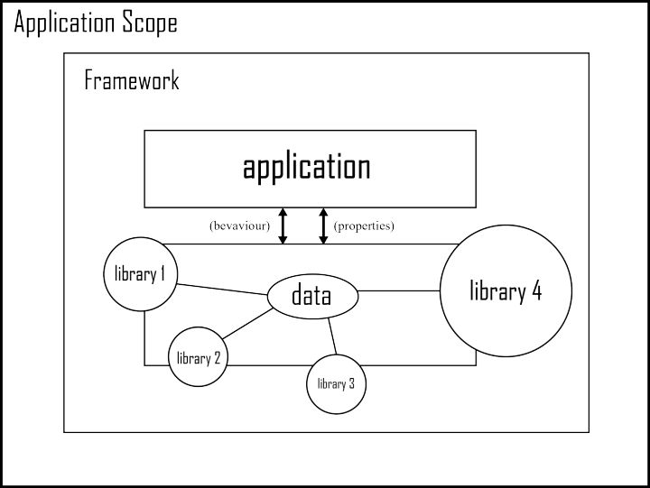

Vue基本概念

课程介绍
- Vue基础知识
- Vue全家桶（vue/vue-router/vuex/axios）
- 组件化开发
- webpack - 前端模块化打包构建工具
- Vue项目
vue介绍
- vue 中文网
- Vue.js 是什么
- 介绍：Vue是一套用于构建用户界面的渐进式框架。
库和框架的概念

Library
库，本质上是一些函数的集合。每次调用函数，实现一个特定的功能
- 代表：jQuery
- 使用库的时候，把库当成工具使用，需要自己控制代码的执行逻辑。
Framework
框架，是一套完整的解决方案，使用框架的时候，需要把你的代码放到框架合适的地方，框架会在合适的时机调用你的代码
- 框架规定了自己的编程方式，是一套完整的解决方案
- 使用框架的时候，由框架控制一切，我们只需要按照规则写代码
库和框架的区别
- 使用库的时候，很自由，只要调用库提供的各种各样的方法就行，也可以不用其他的一些方法
- 使用框架的时候，需要按照框架的规则写代码，限制会非常多，但同时框架的功能也很强大，可以极大的提升开发的效率。

MVVM的概念
参考资料：从Script到Code Blocks、Code Behind到MVC、MVP、MVVM
MVC
- MVC是一种软件架构模式，也有人叫做设计模式
- M: Model 数据模型（专门用来操作数据，数据的CRUD）
- V：View 视图（对于前端来说，就是页面）
- C：Controller 控制器（是视图和数据模型沟通的桥梁，用于处理业务逻辑）

MVVM
MVVM，一种更好的UI模式解决方案
- M：model数据模型(ajax获取到的数据)
- V：view视图（页面）
- VM：ViewModel 视图模型

MVC vs MVVM
- MVC模式，将应用程序划分为三大部分，实现了职责分离，需要自己实现controller的代码，需要操作DOM
- MVVM通过
数据双向绑定让数据自动地双向同步- V（修改视图） -> M（数据自动同步）
- M（修改数据） -> V（视图自动徒步）

Vue中的MVVM
虽然没有完全遵循 MVVM 模型，Vue 的设计无疑受到了它的启发。因此在文档中经常会使用 vm (ViewModel 的简称) 这个变量名表示 Vue 实例
注意：
1. 在vue中，不推荐直接手动操作DOM！！！
2. 在vue中，通过数据驱动视图，不要在想着怎么操作DOM，而是想着如何操作数据！！
vue初体验
基本使用步骤
- 安装：
npm install vue 引入：通过script标签引入vue，开发期间使用未压缩版vue.js
通过
new Vue()创建vue实力，并且指定el和data参数- 在页面中，通过
{{ }}访问数据
// 2. 创建vue实例，需要指定el和data属性
let vm = new Vue({
// 指定vue监管的视图区域,只要id为app的div内部才会受vue的管理
el: '#app',
template:"这里是指定的渲染模板",//设置后以设置为准，不设置以el的outerHteml为模板
// 提供了vue中使用的数据
data: {
msg: 'hello vue'
},
// vue中的定义函数，都放到methods中
//methods中的this，默认指向当前vue实例
methods：{
},
//计算属性
comptued:{
},
//数据监视
watch:{
}
})
注意：el不能是html和body
插值表达式
插值表达式：{{}}，也叫Mustache语法，小胡子语法，因为长得像胡子
- 解释：使用
{{}}（插值表达式）从data中获取数据，并展示在模板中 - 说明：
{{}}中只能出现JavaScript表达式 - 说明：数据对象的属性值发生了改变，插值处的内容都会更新
<h1>Hello, {{ msg }}.</h1>
<p>{{ isOk ? 'yes': 'no' }}</p>
<p>{{ 1 + 2 }}</p>
<!-- ！！！错误示范！！！ -->
<h1 title="{{ if(){} }}"></h1>
<h1 title="{{ err }}"></h1>
注意：
- 不是data里面的数据不能直接使用
- 不能再花括号里直接编写js语句
- ◆不能再标签属性中使用{{}}
vue指令
- 解释：指令 (Directives) 是带有
v-前缀的特殊属性，可以在html标签中使用，可以看成特殊的html属性 - 作用：指令提供了一些特殊的功能，当指向绑定到标签上时，可以给标签增加一些特殊的行为
v-bind指令(属性值)
- 描述：插值表达式不能用在html的属性上，如果想要动态的设置html元素的属性，需要使用v-bind指令
- 作用：动态的设置html的属性
- 语法：
v-bind:title="msg" - 简写：
:title="msg"
<!-- 完整语法 -->
<a v-bind:href="url"></a>
<!-- 缩写 -->
<a :href="url"></a>
:class对样式的处理
:class="值" 不会与已经有的class属性冲突
1、传对象（常用
对象有键和值，键是类名，值是布尔类型
，true为添加类名，false表示移除类名
2、传数组
数组的每一项都会变成需要添加的类名
3、直接在模板中编写对象或者数组
<div class="base" :class="{pink:isPink,big:true}"> </div>
:style行内样式的增强
1、传对象（常用
对象有键和值，键是样式名，值样式的值
2、直接在模板中编写对象或者数组
<div :style="{background-color=red,color=blue}"> </div>
v-model指令(表单值)
v-model: https://cn.vuejs.org/v2/guide/forms.html
- 作用：在表单元素上创建双向数据绑定
- 说明：监听用户的输入事件以更新数据
- 思考：如何在JS代码中获取到文本框的值？？？
textare：value select：selected checked：checked checkbox:checked
<input type="text" v-model="message" placeholder="edit me">
<p>Message is: {{ message }}</p>
注意：select 的value值等于选中的option的value值，可以用于获取或设置
双向数据绑定
- 双向数据绑定：将DOM与Vue实例的data数据绑定到一起，彼此之间相互影响
- 数据的改变会引起DOM的改变
- DOM的改变也会引起数据的变化
- 原理：数据劫持，
Object.defineProperty中的get和set方法getter和setter：访问器- 作用：指定
读取或设置对象属性值的时候，执行的操作
- 注意：
Object.defineProperty方法是ES5中提供的，IE8浏览器不支持这个方法。因此，Vue支持IE8及其以下版本浏览器 - Vue - 深入响应式原理
- MDN - Object.defineProperty()
/*
语法
*/
var obj = {}
Object.defineProperty(obj, 'msg', {
// 设置 obj.msg 执行的操作
set: function () {},
// 读取 obj.msg 执行的操作
get: function () {}
})
Vue双向绑定的极简实现
<!-- 示例 -->
<input type="text" id="txt" />
<span id="msgBox"></span>
<script>
const txt = document.getElementById('txt')
const msgBox = document.getElementById('msgBox')
const obj = {}
//借助第三方变量 temp 获取 先前的值
let temp = obj.msg
// 给对象obj添加msg属性，并设置setter访问器，可以实现数据劫持
//不管是这个属性的获取，还是这个属性的设置，我们都可以劫持并监听到
//参数一：对象名 参数二：属性名
Object.defineProperty(obj, 'msg', {
//只要发生获取操作，都会被get方法劫持，并将get方法的返回值作为获取的结果
get：function(){
//借助第三方变量 temp 获取 先前的值
return temp
}
// 设置 obj.msg 执行的操作
set: function (curVal) {
txt.value = curVal
msgBox.innerText = curVal
}
})
// 监听文本框的改变
txt.addEventListener('input', function (event) {
obj.msg = this.value
})
</script>
v-on指令(注册事件)
https://cn.vuejs.org/v2/guide/events.html
- 作用：绑定事件
- 语法：
v-on:click="say"orv-on:click="say('参数', $event)" - 简写：
@click="say" - 说明：绑定的事件从
methods中获取 - 案例：跑马灯
<marquee>
<!-- v-on:事件名="数据处理函数" -->
<!-- 完整语法 -->
<a v-on:click="doSomething"></a>
<!-- 缩写 -->
<a @click="doSomething"></a>
注意：vue中的定义的函数，都放到methods中
事件修饰符
//@事件名.事件修饰符 = "事件处理函数"
//.事件修饰符可以连续+.事件修饰符
.stop阻止冒泡，调用 event.stopPropagation().prevent阻止默认行为，调用 event.preventDefault().capture添加事件侦听器时使用事件捕获模式.self只当事件在该元素本身（比如不是子元素）触发时，才会触发事件.once只能在自生触发，事件只触发一次
注意：在不传实参的情况下，函数直接使用形参e，传实参函数第一个参数填写$event，其它参数任意
按键修饰符
在监听键盘事件时，我们经常需要检查常见的键值。Vue 允许为 v-on 在监听键盘事件时添加按键修饰符：
//可以使用.键盘码
.enter 或者 .13
.tab
.delete (捕获“删除”和“退格”键)
.esc
.space
.up
.down
.left
.right
你还可以通过全局 config.keyCodes 对象自定义按键修饰符别名：
// 可以使用 `v-on:keyup.f1`
Vue.config.keyCodes.f1 = 112
v-text指令
- 解释：更新元素的
textContent。如果要更新部分的textContent，需要使用{{ Mustache }}插值。
<h1 v-text="msg"></h1>
v-html指令
- 解释：更新DOM对象的 innerHTML,html标签会生效
<h1 v-html="msg"></h1>
在网站上动态渲染任意 HTML 是非常危险的，因为容易导致 XSS 攻击。只在可信内容上使用 v-html，永不用在用户提交的内容上。
v-for
- 作用：基于源数据多次渲染元素或模板块
<!-- 1 基础用法 -->
<!-- v-for="每一项 in 数组名" -->
<div v-for="item in list">
{{ item.text }}
</div>
<!-- item 为当前项，index 为索引 -->
<!-- v-for="(每一项, 下标) in 数组名" -->
<p v-for="(item, index) in list">{{item}} -- {{index}}</p>
<!-- item 为值，key 为键-->
<!-- 遍历对象 v-for="(值(value), 键(key), index) in 对象名" -->
<p v-for="(item, key) in obj">{{item}} -- {{key}}</p>
<p v-for="item in 10">{{item}}</p>
注意：v-for那个元素需要重复渲染就加给它
key属性
- 推荐：使用
v-for的时候提供key属性，能够提升列表渲染的性能 - 规范设置时使用 :key="item.id"
- 说明：使用 key，VUE会基于 key 的变化重新排列元素顺序，并且会移除 key 不存在的元素。
- vue key
- vue key属性的说明
<div v-for="item in items" :key="item.id">
<!-- 内容 -->
</div>
v-if 和 v-show
v-if：根据表达式的值的真假条件，销毁或重建元素v-show：根据表达式之真假值，切换元素的 display CSS 属性
v-if = "布尔值" //true显示 false隐藏
//原理：控制盒子的删除与创建
v-show= "布尔值" //true显示 false隐藏
//原理：控制的是css样式
<p v-show="isShow">这个元素展示出来了吗？？？</p>
<p v-if="isShow">这个元素，在HTML结构中吗？？？</p>
使用场景
- 如果是需要频繁的切换显示隐藏，用v-show
- 如果盒子要么显示要么隐藏，不会频繁切换，使用v-if
样式处理-class和style
- 使用方式：
v-bind:class="expression"or:class="expression" - 表达式的类型：字符串、数组、对象（重点）
- 语法：
<!-- 1 -->
<!-- 重点 -->
<div v-bind:class="{ active: true }"></div> ===>
<div class="active"></div>
<!-- 2 -->
<div :class="['active', 'text-danger']"></div> ===>
<div class="active text-danger"></div>
<!-- 3 -->
<div v-bind:class="[{ active: true }, errorClass]"></div> ===>
<div class="active text-danger"></div>
--- style ---
<!-- 1 -->
<div v-bind:style="{ color: activeColor, 'font-size': fontSize + 'px' }"></div>
<!-- 2 将多个 样式对象 应用到一个元素上-->
<!-- baseStyles 和 overridingStyles 都是对象 -->
<div v-bind:style="[baseStyles, overridingStyles]"></div>
v-else与v-else-if指令
<h1 v-if="isLogin" > 会员 </h1>
<h1 v-else> 普通用户</h1>
注意：v-if与v-else必须连写，中间不可有其它语句分隔
<h1 v-if="age>=18"> 成年 </h1>
<h1 v-else-if="age>=22"> 青年 </h1>
<h1 v-else> 中老年 </h1>
提升性能：v-pre(了解)
- 说明：跳过这个元素和它的子元素的编译过程。可以用来显示原始 Mustache 标签。跳过大量没有指令的节点会加快编译。
<span v-pre>{{ this will not be compiled }}</span>
提升性能：v-once(了解)
- 说明：只渲染元素和组件一次。随后的重新渲染，元素/组件及其所有的子节点将被视为静态内容并跳过。这可以用于优化更新性能。
<span v-once>This will never change: {{msg}}</span>
v-clock(没用)
作用：可以解决插值表达式闪烁问题
特点：默认可以添加到元素上，会在完成渲染后会被移除
使用：配合属性选择器使用
[v-clock]{
display:none
}
实际开发中使用webpack打包工具，会解决打包问题
案例：todomvc
计算属性
计算属性：当计算属性依赖的数据发生改变的时候，计算属性会重新计算一次，如果计算属性依赖的属性没有发生改变，那么计算属性就不会重新计算。
基本使用
var vm = new Vue({
el: '#app',
data: {
n1:'',
n2:''
},
//n3依赖与n1和n2的值，当n1 和 n2发生改变的时候，这个函数就会执行。
//返回值就是n3的值
computed: {
n3(){
return +this.n1 + +this.n2;
}，
n4:function(){
this//指向当前实例
}
}
});
计算属性是基于它们的依赖项进行缓存的
如果页面中需要使用多次计算属性的值，只会计算一次，计算属性只有在它的相关依赖发生改变时才会重新求值。
计算属性不能与data中的属性同名，因为无论是data中的属性还是计算属性，最终都是挂载到vm上的
计算属性的完整功能
计算属性默认只有 getter ，不过在需要时你也可以提供一个 setter ：
// ...
computed: {
fullName: {
// getter
get: function () {
return this.firstName + ' ' + this.lastName
},
// setter
set: function (newValue) {
var names = newValue.split(' ')
this.firstName = names[0]
this.lastName = names[names.length - 1]
}
}
}
// ...
现在再运行 vm.fullName = 'John Doe' 时，setter 会被调用，vm.firstName 和 vm.lastName 也会相应地被更新。
watch监视数据的变化
数据持久化存储
- 数据库存储
- 本地存储（localstorage）
vue实例中提供了一个watch属性，用于监听vue实例中的属性的变化。
watch对应了一个对象，键是观察的属性，值是对应的回调函数。
基本使用
- 基本使用
//配置的函数是数据变化时执行的函数
//第一个参数：当前值newValue
//第二个参数：上一次的值oldValue
username: function(curr, old) {
}
- 表单校验效果
// watch: 监视数据的变化
watch: {
// 监视msg，只要msg属性的值发生改变，function就会执行
// value: 当前值 oldValue:上一次的值
msg: function(value) {
if (value.length >=3 && value.length <= 6) {
this.tips = '正确'
} else {
this.tips = '密码格式不正确'
}
}
}
监视对象
- watch默认监听简单数据类型的变化
- 如果需要监听复杂数据类型，需要深度监听(相对消耗性能)
监视对象的时候，需要加上
deep: true为了发现对象内部值的变化，可以在选项参数中指定
deep: true
- 如果是一个对象，无法监听到对象内部值的变化
<script>
var vm = new Vue({
el: '#app',
data: {
user: {
name:'zs',
age: 18
}
},
watch: {
user: function(curr, old) {
console.log(curr, old);
}
}
});
</script>
<input type="text" v-model="user.name">
<input type="text" v-model="user.age">
- 需要加上deep
watch: {
user: {
deep: true,
//只有数据变化就执行handler处理函数
handler: function(curr, old) {
//注意：如果监听的是对象，新值与旧值都是相同的，因为指向了同一个对象。
//https://cn.vuejs.org/v2/api/#vm-watch
console.log(curr.age, curr.name);
}
}
}
- immediate 属性,立马进行监听
//是否需要一加载就执行数据监听
watch: {
user: {
deep: true,
immediate:true,
handler: function(curr, old) {
console.log(curr.age, curr.name);
}
}
}
生命周期与钩子函数
生命周期介绍
- vue生命周期钩子函数
- 简单说：一个实例从开始到最后消亡所经历的各种状态，就是一个实例的生命周期
实例生命周期函数的定义：从组件被创建，到组件挂载到页面上运行，再到页面关闭组件被卸载，这三个阶段总是伴随着组件各种各样的事件，那么这些事件，统称为组件的生命周期函数！
- 生命周期的钩子函数：框架提供的函数，能够让开发人员的代码，参与到组件的生命周期中。也就是说，通过钩子函数，就可以控制组件的行为
- 注意：vue再执行过程中会自动调用
生命周期钩子函数，我们只需要提供这些钩子函数即可 - 注意：钩子函数的名称都是固定的！！！
钩子函数 - beforeCreate()
- 说明：在实例初始化之后，数据观测 (data observer) 和 event/watcher 事件配置之前被调用
- 注意：此时，无法获取 data中的数据、methods中的方法
钩子函数 - created()
- 注意：这是一个常用的生命周期，可以调用methods中的方法、改变data中的数据
- vue实例生命周期 参考1
- vue实例生命周期 参考2
- 使用场景：发送请求获取数据
钩子函数 - beforeMounted()
- 说明：在挂载开始之前被调用
钩子函数 - mounted()
- 说明：此时，vue实例已经挂载到页面中，可以获取到el中的DOM元素，进行DOM操作
钩子函数 - beforeUpdated()
- 说明：数据更新时调用，发生在虚拟 DOM 重新渲染和打补丁之前。你可以在这个钩子中进一步地更改状态，这不会触发附加的重渲染过程。
钩子函数 - updated()
- 说明：组件 DOM 已经更新，所以你现在可以执行依赖于 DOM 的操作。
钩子函数 - beforeDestroy()
- 说明：实例销毁之前调用。在这一步，实例仍然完全可用。
- 使用场景：实例销毁之前，执行清理任务，比如：清除定时器等
钩子函数 - destroyed()
- 说明：Vue 实例销毁后调用。调用后，Vue 实例指示的所有东西都会解绑定，所有的事件监听器会被移除，所有的子实例也会被销毁。
JSON-SERVER虚拟数据接口的使用
在不到30秒的时间内获得零编码的完整虚假REST API
虚拟数据接口
全局安装
yarn global add json-server
提供一个json文件
{
"todos": [
{ "id":1, "name": "吃饭", "flag": false },
{ "id":2, "name": "抽烟", "flag": true },
{ "id":3, "name": "喝酒", "flag": false },
{ "id":4, "name": "烫头", "flag": true }
]
}
启动接口服务
json-server data.json
特点
JSON-server给我们生成的一个rest风格的接口
查询：get http://localhost:3000/todos 获取所有的任务
http://localhost:3000/todos/3 获取id为3的任务
增加：post http://localhost:3000/todos 增加
删除：delete http://localhost:3000/todos/3
修改： put ： 全量的修改，会把原来的所有内容个都覆盖掉， 需要改不需要改都应该传
patch : 打补丁，只会修改传递的值
axios 请求数据接口
Axios 是一个基于 promise 的 HTTP 库，可以用在浏览器和 node.js 中。
vue1.x的时候vue提供了一个包，vue-resource 专门用于发送ajax请求，但是vue2.x的时候，vue的作者的自己发了一个文章，推荐大家都使用axios库来发送ajax请求。
vue自身没有提供发送ajax请求的工具
Axios 是一个基于 promise 的 HTTP 库，可以用在浏览器和 node.js 中。
- Promise based HTTP client for the browser and node.js
- 以Promise为基础的HTTP客户端，适用于：浏览器和node.js
- 封装ajax，用来发送请求，异步获取数据
- 安装：
npm i -S axios - axios github
axios 优化 - 绑定到 vue 的原型
每次都导入 axios 很麻烦
配置:
import axios from 'axios'
Vue.prototype.$axios = axios
使用:
this.$axios.get(.....)
axios 优化 - 配置默认的baseurl
问题: 每次都要拼接地址, 很麻烦
配置:
// 配置baseURL基准地址
axios.defaults.baseURL = 'http://localhost:8888/api/private/v1/'
使用:
this.$axios.post('login', ....)
axios 优化 - 配置请求拦截器 - 配置 token
问题: 每次请求都要带上 token, 麻烦
// 配置请求拦截器: 将每次的请求, 进行拦截, 可以对每次的请求进行处理
axios.interceptors.request.use(function (config) {
// 在发送请求之前做些什么
config.headers.Authorization = localStorage.getItem('token')
return config
}, function (error) {
// 对请求错误做些什么
return Promise.reject(error)
})
axios 优化 - 响应拦截器
问题: 每次真正需要的 res.data
// 添加响应拦截器
axios.interceptors.response.use(function (response) {
// 对响应数据做点什么
//被axios包装过的数据，解析出来，方便使用
response = response.data
if (response.meta.status === 401){
// 拦截登陆
//this.$router.push
response.meta.msg = '尊敬的用户，您的登陆状态已过期，请重新登陆'
localStorage.removeItem('token')
router.push('/login')
}
return response
}, function (error) {
// 对响应错误做点什么
return Promise.reject(error)
})
todomvc-axios版本
过滤器 filter
- 作用：文本数据格式化
- 两种过滤器：1 全局过滤器 2 局部过滤器
全局过滤器
- 说明：通过全局方式创建的过滤器，在任何一个vue实例中都可以使用
//参数一：过滤器的名字
//参数二：处理函数
Vue.filter('filterName', function(value) {
// value 表示要过滤的内容
})
- 示例：
<div>{{ dateStr | date }}</div>
<div>{{ dateStr | date('YYYY-MM-DD hh:mm:ss') }}</div>
<script>
Vue.filter('date', function(value, format) {
// value 要过滤的字符串内容
// format 过滤器的参数
})
</script>
局部过滤器
- 说明：局部过滤器是在某一个vue实例的内容创建的，只在当前实例中起作用
{
data: {},
// 通过 filters 属性创建局部过滤器
filters: {
filterName: function(value) {}
}
}
响应式数据的说明
响应式数据: 把data中的数据挂到vm身上，vm身上的这个数据其实就是响应式的
一旦数据发生了改变，页面中的内容也会跟着改变
动态添加的数据是无效的以及$set的使用
data中的数据一定要先声明，再使用，动态给对象添加的属性不是响应式的（数组动态添加数据是被Vue管理的，无需处理）
数组不能使用下标操作已经手动修改length的长度
//以下操作不被vue动态更新试图 vm.list[0]=值 vm.list.length =2 //解决方法 this.$set(数组名,下标,值)
<div id="app">
<p>{{person.name}}---{{person.age}}---{{person.gender}}</p>
</div>
<script src="vue.js"></script>
<script>
var vm = new Vue({
el: '#app',
data: {
person: {
name: 'zs',
age: 18
}
}
})
</script>
// 动态给data中添加的数据是无效的
// 在vue实例创建的时候，会把data中的数据绑定到vm上，所以data中的数据是响应的
// 但是动态绑定的数据不是响应是的。
vm.person.gender = '男'
- 如果想要动态绑定数据，并且是响应式的,需要使用
vm.$set方法
/*参数一：对象名
参数二：属性名
参数三：属性值*/
//方式一
this.$set(this.person, 'gender', '男')
//方式二
Vue.set(this.person, 'gender', '男')
结论：
- 如果是对象，动态给对象添加或者删除一个属性，vue是检测不到的，所以不是响应的，如果想用动态添加的数据是响应式，需要使用
Vue.set(obj, key, value)vm.$set(obj, key ,value) - 如果是数组，通过数组的下标或者是数组的长度，vue也是检测不到，所以操作也不是响应式的
- 使用
Vue.set方法 - 数组的变异的方法，这个方法会改变原数组，能够触发vue的更新。
- 使用
异步DOM更新以及$nextTick的说明
在vue中数据发生了改变，DOM中的数据也会跟着发生改变，但是这个过程是异步的
vue的数据发生改变之后，DOM不会立即更新，会等到下一次渲染工作执行的时候才会更新DOM
目的：为了提高渲染的性能
clickFn () {
// 数据变化了， view中的内容也要跟着变
this.msg = '你好啊，vue1'
this.msg = '你好啊，vue2'
this.msg = '你好啊，vue3'
this.msg = '你好啊，vue4'
this.msg = '你好啊，vue5'
// 为什么：DOM操作是非常消耗性能的，简单DOM的操作能够提升我们的性能，如果每次操作数据，都立即更新DOM，无疑性能会非常的低，所以vue中会等待数据都修改完成
let result = document.querySelector('p').innerHTML
console.log(result)
}
$nextTick方法会在DOM更新之后执行
// 在实际开发中，有可能需要在数据改变之后，获取到更新之后的DOM数据
// 这个时候可以使用 $nextTick函数
// 当vue更新完DOM后，会自动调用$nextTick函数，确保在这个函数中可以获取到DOM结构是最新的
//方式一
this.$nextTick(function() {
let result = document.querySelector('p').innerHTML
console.log(result)
})
//方式二
Vue.nextTick(function(){
let result = document.querySelector('p').innerHTML
console.log(result)
})
组件化开发
组件的概念
组件 (Component) 是 Vue.js 最强大的功能之一。组件可以扩展 HTML 元素，封装可重用的代码。在较高层面上，组件是自定义元素，Vue.js 的编译器为它添加特殊功能。
在vue中都是组件化开发的，组件化开发就是把一个完整的页面分割成一个一个的小组件。
组件的优点：
- 容易维护
- 复用
vue组件分为全局组件和局部组件
全局组件：在所有的vue实例中都能使用
局部组件：只有在当前vue实例中能够使用
全局组件
- 定义
//要注册一个全局组件，可以使用 Vue.component(tagName, options)。
//注册一个全局的组件
/*参数一：组件名
参数二：组件配置项*/
// Vue.component(tagName, options)
Vue.component("hello", {
template: '<h3>我是全局组件！</h3>'
});
注意点：
- 定义组件不能和已经存在的HTML的标签重名
定义组件，模板的内容，有且只有一个根元素
使用
全局组件可以在所有的实例中使用
<div id="app">
<hello></hello>
</div>
- 注意点：组件的模板有且仅有一个根元素
template: '<h3>我是全局组件！</h3><p>有两个根元素</p>'; //错误的用法
template: '<div><h3>我是全局组件！</h3><p>有两个根元素</p></div>';
- 如果有很多的内容，template可以使用字符串模版
Vue.component("my-button", {
template: `
<div>
<h1>我是一个标题</h1>
<p>我是一个段落</p>
</div>
`
});
局部组件
//在vue实例的内部，通过components属性来定义局部组件
components: {
"my-button": {
template: `
<div>
<h1>我是一个标题</h1>
<p>我是一个段落</p>
</div>
`
}
}
组件是特殊的vue实例
可以将组件看成是一个vue的实例，因此，在vue实例中能配置的属性，在组件中依旧能够配置。
比如：data,method,watch,computed,钩子函数等
注意：组件中data属性必须是一个函数，返回值才是data的数据
//可以把组件看成一个vue实例
Vue.component("my-button", {
template: `
<div>
<h1 @click="add">我是一个标题</h1>
<p>{{msg}}</p>
</div>
`,
//组件可以通过data属性提供组件自己的数据，注意，组件的data参数必须是一个函数，不能是用一个对象。
data() {
return {
msg: 'hello vue'
};
},
methods: {
add() {
console.log("哈哈");
}
}
});
- 组件是一个独立封闭的个体，组件之间的数据是无法相互使用的
var vm = new Vue({
el: '#app',
data: {
outer: '我是实例的数据'
},
});
//可以把组件看成一个vue实例
Vue.component("my-button", {
template: `
<div>
<p>{{inner}}</p> //正确，组件可以使用自己的数据
<p>{{outer}}</p> //报错，组件无法使用其他组件的数据
</div>
`,
data() {
return {
inner: '我是组件的数据'
};
}
});
vue-devTool浏览器插件的使用
vue-devtools是一款基于chrome游览器的插件，用于调试vue应用，这可以极大地提高我们的调试效率。
https://segmentfault.com/a/1190000009682735
默认插件必须在http协议下打开才能看到。
插件详细信息---》允许访问文件网址 ，这样file协议打开也能看到效果了
组件通讯
因为组件是一个独立的个体，组件无法使用到外部的数据
但是在真实开发中，多个组件之间是需要相互使用彼此的数据的，因此需要使用组件通讯的技术，让组件之间能够相互传值。
组件通讯分为三类
- 父组件传递值给子组件
- 子组件传递值给父组件
- 非父子组件之间的传值
组件通讯-父传子
- 定义两个组件
Vue.component("parent", {
template: `
<div class="parent">
<p>这是父组件</p>
<son></son>
</div>
`,
data () {
return {
car: '玛莎拉蒂',
month: 1000000
}
}
});
Vue.component("son", {
template: `
<div class="son">
<p>这是子组件</p>
</div>
`
});
<div id="app">
<parent></parent>
</div>
- 组件的通讯
1. 在父组件的模版中，给子组件增加一个自定义的属性。
<son :car="car"></son>
2. 子组件通过props属性进行接收
//接收父组件传递过来的值
props: ['car']
3. 子组件使用父组件传递过来的值
template: `
<div class="son">
<p>这是子组件</p>
<p>这是父组件传递过来的值----{{car}}</p>
</div>
`,
- 思考，怎么获取父组件的money
注意：props负责获取父组件的传递过来的，props中的值是只读的，不允许修改
组件通讯-子到父
参考链接：https://blog.csdn.net/jsxiaoshu/article/details/79058940
整体思路
1.子组件触发这个自定义事件，触发事件时把数据传递给父组件
2. 父组件给子组件注册一个自定义事件
- 子组件内部触发自定义事件，并且把要传递的数据作为参数进行传递
//自定义名必须全部小写
//$emit可以出发当前实例的事件
this.$emit('getData', this.car);
- 父组件给子组件外部注册事件
<son @fn='getData'></son>- 父组件内部获取值
methods: {
//1. 父组件中定义了一个方法，用于获取数据
getData (skill) {
console.log("父组件中提供的方法", skill);
this.skill = skill;
}
}
案例-评论列表
- 父到子
- 子到父
- es6中属性的简写
组件通讯-非父子
非父子组件之间通过一个空的Vue实例来传递数据。
const bus = new Vue(); //bus:公交车 事件总线
- 核心逻辑
组件A给组件B传值：
1. 组件A给bus注册一个事件，监听事件的处理程序
2. 组件B触发bus上对应的事件，把 值当成参数来传递
3. 组件A通过事件处理程序获取数据
- 组件A给bus注册事件
//rose在组件创建的时候，给bus注册了一个事件
created () {
bus.$on("get", (msg)=>{
console.log("这是rose注册的事件", msg);
this.msg = msg;
});
}
- 组件B触发bus的事件
<button @click="send">表白</button>
methods: {
send() {
bus.$emit("get", this.msg);
}
}
- 组件A通过事件处理程序可以获取到传递的值
bus.$on("get", (msg)=>{
console.log("这是rose注册的事件", msg);
this.msg = msg;
});
注意点：1. 必须是同一辆公交车 2. 注册的事件和触发的事件必须保持一致
案例：开关灯案例
bus是一种通用的组件通讯方案
我们有三种组件通讯的方案
1. 父父子
2. 子传父
3. 非父子（bus）
其实bus方案也适用于父传子和子传父的方案。
slot插槽
当组件中某一项需要单独定义，那么就应该使用solt
幂名插槽
除非子组件模板包含至少一个
<slot>插口，否则父组件的内容将会被丢弃 ,当子组件模板只有一个没有属性的 slot 时，父组件整个内容片段将插入到 slot 所在的 DOM 位置，并替换掉 slot 标签本身。
在组件的模版中定义slot插槽
Vue.component("modal", {
template: `
<div class="modal">
<p>温馨提示</p>
<div>
<slot></slot>
</div>
<button>关闭</button>
</div>
`,
});
父组件传值
<modal>你确定要退出系统吗？</modal>
<modal>你确定要删除这个内容吗？</modal>
插槽的分类：
- 幂名插槽
<slot></slot>或者<slot name="default"></slot> - 具名插槽
给插槽取名
<slot name="header"></slot>通过template标签将需要分发的内容包裹，并且指定v-slot:插槽名 实现定向分发（不会影响布局，不会渲染，只会用于分块） - 作用域插槽
作用：分发内容时使用子组件中的数据 ，此时使用作用域插槽
在定义slot的同时，添加自定义属性，用于传参
<slot money="100"></slot>添加的所有自定义属性，都会以属性的方式添加到新的对象中，对象存在template中 v-slot:default(插槽名)="obj" 属性里可以通过等号接收
具名插槽
如果一个组件中想使用多个slot那么此时就应该使用具名slot。
Vue.component("modal", {
template: `
<div class="modal">
<slot name="header"></slot>
<slot name="content"></slot>
<slot name="footer"></slot>
</div>
`,
});
<!--方式一-->
<modal>
<p slot="header">温馨提示</p>
<div slot="content">你要删除内容吗</div>
<button slot="footer">关闭</button>
</modal>
<modal>
<p slot="header">提示</p>
<div slot="content">你要删除这条记录吗</div>
<button slot="footer">开启</button>
</modal>
<!--方式二-->
<template v-slot:header>
<h3>啦啦</h3>
</template>
作用域插槽
作用：分发内容时使用子组件中的数据 ，此时使用作用域插槽 在定义slot的同时，添加自定义属性，用于传参
<slot money="100"></slot>添加的所有自定义属性，都会以属性的方式添加到新的对象中，对象存在template中 v-slot:default(插槽名)="obj" 属性里可以通过等号接收
<slot money="100" :item="item"></slot>
<template v-slot:default(插槽名)="obj">
<h3>{{obj.item.name}}</h3>
</template>
单页应用程序与路由
SPA - 单页应用程序
- SPA：
Single Page Application单页面应用程序 - MPA :
Multiple Page Application多页面应用程序
优势
- 传统的多页面应用程序，每次请求服务器返回的都是一整个完整的页面
- 单页面应用程序只有第一次会加载完整的页面
- 以后每次请求仅仅获取必要的数据，减少了请求体积，加快页面响应速度，降低了对服务器的压力
- SPA更好的用户体验，运行更加流畅
缺点
- 开发成本高 (需要学习路由)
- 不利于 SEO 搜索引擎优化
ssr: server side rendering : 服务端渲染 大前端 nodejs
路由介绍
- 路由 : 是浏览器 URL 中的哈希值( # hash) 与 展示视图内容(组件) 之间的对应规则
- 简单来说,路由就是一套映射规则(一对一的对应规则), 由开发人员制定规则.-
- 当 URL 中的哈希值(
#hash) 发生改变后,路由会根据制定好的规则, 展示对应的视图内容(组件)
- 为什么要学习路由?
- 渐进式 =>vue => vuer-router (管理组件之间的跳转)
- 在 web App 中, 经常会出现通过一个页面来展示和管理整个应用的功能.
- SPA 往往是功能复杂的应用,为了有效管理所有视图内容,前端路由 应运而生.
- vue 中的路由 : 是 hash 和 component 的对应关系, 一个哈希值对应一个组件
vue-router（官方提供）
基本使用
- 安装
yarn add vue-router
- 引入路由 文件
<script src="vue.js"></script>
<script src="vue-router.js"></script>
- 创建路由并且挂载到vue实例
const router = new VueRouter()
const vm = new Vue({
el: '#app',
data: {
msg: 'hello vue'
},
router
})
具体步骤
实现vue的具体步骤
- 配置路由规则 hash值和组件的映射规则
- 提供对应组件
- 配置路由的显示出口, 确定匹配到的组件显示的位置
配置路由规则
const router = new VueRouter({
// 配置路由的规则
routes: [
{ path: '/one', component: One },
{ path: '/two', component: Two }
]
})
创建对应组件
const One = {
template: ` <div> 子组件 one </div> `
}
const Two = {
template: ` <div> 子组件 one </div> `
}
配置路由的出口，显示位置
<div id="app">
<h1>{{ msg }}</h1>
<router-view></router-view>
</div>
路由导航
<!-- 使用 router-link 组件来导航. -->
<!-- 通过传入 `to` 属性指定链接. -->
<!-- <router-link> 默认会被渲染成一个 `<a>` 标签 -->
<router-link to="/foo">Go to Foo</router-link>
<router-link to="/bar">Go to Bar</router-link>
导航高亮
- 点击导航 => 元素里添加了两个类
<a href="#/one" class="router-link-exact-active router-link-active">One</a>
<a href="#/two" class="">Two</a>
- 修改方式1 : 直接修改类的样式
.router-link-exact-active,
.router-link-active {
color: red;
font-size: 50px;
}
- 修改方式2 : 使用存在过的类样式 => 修改默认高亮类名
const router = new VueRouter({
routes: [],
// 修改默认高亮的a标签的类名
// red 是已经存在过的
linkActiveClass: 'red'
})
精确匹配和模糊匹配
- 精确匹配 : router-link-exact-active 类名 : 只有当
浏览器地址栏中的哈希值 与 router-link 的 to 属性值,完全匹配对,才会添加该类 - 模糊匹配: router-link-active 类名 : 只要
浏览器地址栏中的哈希值包含 router-link 的 to 属性值,就会添加该类名 - 解决办法 : 加个 exact
<router-link to="/" exact>
One
</router-link>
- 注意 : 精确匹配和模糊匹配，只对添加类名这个机制有效，与路由的匹配规则无关！！！
自定义高亮样式
使用默认类
router-link-exact-active router-link-active修改默认类名
linkActiveClass: 'current'
linkExactActiveClass: 'current'
.router-link-active 模糊匹配 to="/" 可以匹配很多个不同的地址
.router-link-exact-active 精确匹配
嵌套路由
实际生活中的应用界面，通常由多层嵌套的组件组合而成 (网易云音乐)
const router = new VueRouter({
routes: [
{
path: '/user/:id', component: User,
children: [
// 当 /user/:id 匹配成功，
// UserHome 会被渲染在 User 的 <router-view> 中
{ path: '', component: UserHome },
// ...其他子路由
]
}
]
})
分类 => 将来有 一级分类 和 二级分类
用户中心 => 有登陆 和 退出
路由重定向
- 解释：将
/重定向到/home
{ path: '/', redirect: '/home' }
编程式导航
在 Vue 实例内部，你可以通过 $router 访问路由实例。因此你可以调用 this.$router.push
当你点击 <router-link> 时，这个方法会在内部调用，所以说，点击 <router-link :to="..."> 等同于调用 this.$router.push(...)
this.$router.push('/home')
动态路由匹配
我们经常需要把某种模式匹配到的所有路由，全都映射到同个组件。
比如：文章列表的展示，文章的id不同，展示的文章内容就不同，但是组件是同一个
/product/1 Product
/product/2 Product
/product/10086 Product
没有动态路由参数的实现方式
动态路由参数的配置语法
动态路由参数的匹配规则
动态路由参数的获取
动态路由参数的使用
const Article = {
template: '<div>文章内容</div>'
}
const router = new VueRouter({
routes: [
// 动态路径参数 以冒号开头
// 可以匹配: /article/1 /article/2 /article/xxx
// 不可以匹配：/article ，article/1/2 => 需要设置为 '/article/:id1/:id2'
{ path: '/article/:id', component: Article }，
// 如果在动态的路由参数中使用了?,表示该路由参数可选
// 可以匹配 /article /article/1 /article/2
{ path: '/article/:id?', component: Article }，
]
})
动态路由参数的获取
地址栏中的数据都存放在this.$route中，可以在其中查询到
地址栏完整路径fullPath、动态路由参数params、查询参数query、不包含查询参数的路径path

//created在页面加载时只会执行一次，可以使用插值表达式直接显示到组件中
created(){
//获取地址栏传递的id值
this.$route.params.id
}
const User = {
template: '<div>User {{ $route.params.id }}</div>'
}
自定义指令
有的情况下，你仍然需要对普通 DOM 元素进行底层操作，这时候就会用到自定义指令。
比如：获取文本框的焦点
自定义指令
- 自定义一个指令
- 使用一个自定义指令
定义一个全局的指令
// 注册一个全局自定义指令 `v-focus`
// 参数1：指令的名称
// 参数2：指令的配置项（钩子函数）
Vue.directive('focus', {
// 当被绑定的元素插入到 DOM 中时……
// el: 当前绑定的元素
inserted: function (el) {
// 聚焦元素
el.focus()
}
})
使用自定义指令
<input v-focus>
全局指令与局部指令
定义全局指令
// 注册一个全局自定义指令 `v-focus`
// 参数1：指令的名称
// 参数2：指令的配置项（钩子函数）
Vue.directive('focus', {
// 当被绑定的元素插入到 DOM 中时……
// el: 当前绑定的元素
inserted: function (el) {
// 聚焦元素
el.focus()
}
})
定义局部指令
directives: {
focus: {
// 指令的定义
inserted: function (el) {
el.focus()
}
}
}
指令的钩子函数
bind: 只会调用一次，当指令绑定到当前元素上时调用，此时元素不一定渲染，可以执行指令的初始化inserted: 被绑定元素插入父节点时调，元素肯定被渲染了，可以操作DOM元素update: 指令的值发生改变的时候（v-pp="msg",data中的msg值发送改变)componentUpdated: 指令所在的组件中所有的DOM都更新完成的时候unbind：只调用一次，指令与元素解绑时调用。
//参数1：el指令所在的元素
//参数2：binding 指令的相关的信息对象
//完整指令 v-on:click.stop=""
/*对象中的信息说明
name：指令名
value：指令值
arg:指令参数 :click
modifiers:指令的修饰符 .stop */
Vue.directive('focus', {
// 只会调用一次，当指令绑定到当前元素上时调用
bind (el) {
},
// 当前元素被插入到父节点的时候调用(渲染时)
inserted (el) {
el.focus()
},
// 当指令对应的数据发生改变的时候
update () {
},
// 所有的DOM都更新之后
componentUpdated () {
},
// 指令与元素解绑的时候
unbind () {
}
})
钩子函数的参数
所有的钩子函数两个参数el和binding
指令的组成
v-指令名:指令参数.指令修饰符.指令修饰符 = "指令的值"
v-on:click.enter.prevent = "clickFn"
指令的参数
el: 当前元素
binding：一个对象，包含以下属性：
name：指令名，不包括 v- 前缀。
value：指令的绑定值，例如：v-my-directive="1 + 1" 中，绑定值为 2。
oldValue：指令绑定的前一个值，仅在 update 和 componentUpdated 钩子中可用。无论值是否改变都可用。
expression：字符串形式的指令表达式。例如 v-my-directive="1 + 1" 中，表达式为 "1 + 1"。
arg：传给指令的参数，可选。例如 v-my-directive:foo 中，参数为 "foo"。
modifiers：一个包含修饰符的对象。例如：v-my-directive.foo.bar 中，修饰符对象为 { foo: true, bar: true }。
案例：
- 实现一个v-text指令
- 实现一个v-bind指令
- 实现一个v-on指令
- 实现了一个v-color
指令的简写
在很多时候，你可能想在 bind 和 update 时触发相同行为，而不关心其它的钩子。比如这样写:
Vue.directive('color-swatch', function (el, binding) {
el.style.backgroundColor = binding.value
})
vue动画
Vue 在插入、更新或者移除 DOM 时，提供多种不同方式的应用过渡效果。
Vue 提供了内置的过渡封装组件，该组件用于包裹要实现过渡效果的组件。
基本使用
Vue 提供了 transition 的封装组件，在下列情形中，可以给任何元素和组件添加进入/离开过渡，使用transition标签包裹需要做动画的标签
- 条件渲染 (使用
v-if) - 条件展示 (使用
v-show)
<div id="demo">
<button v-on:click="show = !show">
Toggle
</button>
<transition>
<p v-show="show">hello</p>
</transition>
</div>
new Vue({
el: '#demo',
data: {
show: true
}
})
transition涉及的6个样式类名
v-enter 准备显示时
v-enter-to 已经显示完成时
v-enter-active 显示切换过程中
v-leave 准备离开时
v-leave-to 已经离开完成时
v-leave-active 离开切换过程中
/*样式处理*/
.v-enter-active,
.v-leave-active {
transition: opacity 0.5s;
}
.v-enter,
.v-leave-to {
opacity: 0;
}
.v-leave,
.v-enter-to {
opacity: 1;
}
指定name
如果有多个动画，可以指定name属性
<transition name="fade">
<p v-show="show">hello</p>
</transition>
- 样式
.fade-enter-active,
.fade-leave-active {
transition: opacity 0.5s;
}
.fade-enter,
.fade-leave-to {
opacity: 0;
}
.fade-leave,
.fade-enter-to {
opacity: 1;
}
结合动画使用
结构
<div id="app">
<button @click="show = !show">切换</button>
<transition name="fade">
<h1 v-show="show">{{ msg }}</h1>
</transition>
</div>
！！动画只需要设置动画过程中的样式
样式
.fade-enter-active {
animation: bounce-in 0.5s;
}
/*reverse 从100%反向执行到0%*/
.fade-leave-active {
animation: bounce-in 0.5s reverse;
}
@keyframes bounce-in {
0% {
transform: scale(0);
}
50% {
transform: scale(1.5);
}
100% {
transform: scale(1);
}
}
自定义过渡的类名
我们可以通过以下特性来自定义过渡类名：
enter-classenter-active-classenter-to-classleave-classleave-active-classleave-to-class
<transition name="fade" enter-active-class="in" leave-active-class="out">
<h1 v-show="show">{{ msg }}</h1>
</transition>
.in {
animation: bounce-in 0.5s;
}
.out {
animation: bounce-in 0.5s reverse;
}
@keyframes bounce-in {
0% {
transform: scale(0);
}
50% {
transform: scale(1.5);
}
100% {
transform: scale(1);
}
}
配合animate.css使用
使用步骤
- 引包
- 使用transition标签包裹需要做动画的盒子，就会动态切换6个类名
- 自定义 enter-active-class和leave-active-class类名
<link href="https://cdn.jsdelivr.net/npm/animate.css@3.5.1" rel="stylesheet" type="text/css">
<div id="example-3">
<button @click="show = !show">
Toggle render
</button>
<transition
name="custom-classes-transition"
enter-active-class="animated tada"
leave-active-class="animated bounceOutRight"
>
<p v-if="show">hello</p>
</transition>
</div>
vue脚手架的使用
脚手架的意义
- 脚手架是开发现代web应用的必备
- 充分利用
webpack，babel，eslint等工具辅助项目开发 - 开箱即用，零配置，无需手动配置繁琐的工具即可使用
- vue脚手架还提供了配套的图形管理界面，用于创建，开发和管理你的项目
vue脚手架使用
- 初始化命令
# 全局安装 vue命令
npm install -g @vue/cli
#window建议使用npm安装
yarn global add @vue/cli
#查询版本号
vue-V
# 初始化项目
#vue creat 项目名
vue create hello-world
- 选择预设

- 选择项目的功能
按空格进行选择，按回车进行下一步

- 选择路由的风格

- 选择css预处理语言

- 选择代码规范

- 选择校验规则

- 配置文件的生成方式

- 保存配置

- 给预设起名字

- 启动项目（项目根目录下）
yarn serve
webpack配置
vue已经提供了webpack的默认配置，也可以通过在根目录中创建vue.config.js文件添加自己的配置
//创建vue.config.js文件
// 自动打开浏览器
module.exports = {
devServer: {
open: true
}
}
使用可视化操作界面
vue ui
项目目录说明
.editorcofnig需要给vscode安装要给插件EditorConfigeslintrceslint的配置文件，一般不用手动配置.gitignoregit的忽视文件
live-server 全局插件的安装
yarn build 可以打包生成上线的代码, 但是必须放在服务器环境才能运行, 所以安装了 live-server插件
安装: npm i -g live-server 使用: 在项目目录中, 直接 live-server 回车启动即可
VS Code eslint 插件的安装
用于代码规范提示
特殊特性
ref 和 $refs
ref 被用来给元素或子组件注册引用信息。引用信息将会注册在父组件的 $refs 对象上。如果在普通的 DOM 元素上使用，引用指向的就是 DOM 元素；如果用在子组件上，引用就指向组件
<!-- `vm.$refs.p` will be the DOM node -->
<p ref="p">hello</p>
<!-- `vm.$refs.child` will be the child component instance -->
<child-component ref="child"></child-component>
//访问子元素
this.$refs.p
//通过 this.$refs 可以获取对应的引用, 并且调用方法
this.$refs.input.focus()
$refs 只会在组件渲染完成之后生效，并且它们不是响应式的。这仅作为一个用于直接操作子组件的“逃生舱”——你应该避免在模板或计算属性中访问 $refs。
登录拦截 - 导航守卫完成拦截
导航守卫: https://router.vuejs.org/zh/guide/advanced/navigation-guards.html
存储 token 到 localStorage
localStorage.setItem('token', data.token)配置导航守卫
//创建router实例 const router = new Router({ routes:[ {path:'/' component:Login}， {path:'/' component:Login} ] }) //配置导航守卫 router.beforeEach((to, from, next) => {....}导航守卫详解
// to 到哪去 是一个对象存储了到哪去的详细信息 // from 从哪来 // next 是否放行 next() 放行 next('/login') 拦截到登录 // 如果准备去登录, 不需要拦截 // 如果已经登录过了, 有token, 不需要拦截 // 如果不是去登陆, 且没有 token, 拦截到登录页 router.beforeEach((to, from, next) => { // console.log(to) const token = localStorage.getItem('token') if (to.path === '/login' || token) { next() } else { next('/login') } })
单文件组件
基本概念
single-file components(单文件组件) ，文件扩展名为
.vue的文件
优势：
单文件组件的结构说明
<template>
<div>
<h1>这是单文件组件的模板内容</h1>
</div>
</template>
<script>
// 这是组件的js代码
export default {
data () {
return {
msg: 'hello vue'
}
}
}
</script>
<style>
/* 这是单文件组件的样式 */
h1 {
color: red;
}
</style>
scoped 属性的说明
默认情况，单页面程序中，不同组件的样式会相互影响
例如: 给 index 的 div 设置背景色, 影响到了其他组件
解决方案1：使用类名, 样式写在类名中...
.index { .... } .login { ... }解决方案2: scoped属性
当我们给style标签添加了 scoped 属性, 表示样式只有在当前组件中生效
(如果是组件自己的style样式, 一般都推荐加上 scoped)
<style lang="scss" scoped> </style>原理:
- 给当前组件上所有的元素, 都生成了一个随机的自定义属性
- 给当前组件上 style 中所有样式的选择器也加了一个属性选择器
promise
异步与回调函数的说明
回调函数:
把一个函数当成参数传递, 将来特定的时机调用, 这个函数就叫回调函数
什么时候会用到回调函数, 异步的时候 (定时器, 延时器, ajax success 和 error)
console.log(1) setTimeout(function() { console.log(2) setTimeout(function() { console.log(4) }, 2000) console.log(5) }, 2000) console.log(3)
回调函数的问题:
- 回调函数的阅读性不好, 回调不会立马执行
- 回调函数如果大量的嵌套, 可维护性差 (回调地狱)
回调函数的嵌套问题
按照顺序依次读取 - a, b, c, d 四个文件
回调地狱: 回调函数嵌套回调函数, 嵌套多了, 将来就很难维护, 很难理清顺序
promise 的基本语法
目的: promise 是书写异步代码的另一种方式, 解决回调函数嵌套的问题
如何创建一个 promise 对象
const p = new Promise((resolve, reject) => { promise内部会封装一个异步操作 成功调用 resolve 失败调用 reject })如何使用一个 promise 对象
2. 使用 promise 对象 .then(res => { ... }) 处理成功 .catch(res => { ... }) 处理失败
promise 解决回调地狱的问题
如果有多个 promise 需要处理, 支持链式编程
const p = new Promise(function (resolve, reject) {
// promise 内部会封装一个异步的操作
// resolve: 成功的时候, 需要调用
// reject: 失败的时候, 需要调用
fs.readFile('a.txt', 'utf8', (err, data) => {
if (err) {
reject(err)
} else {
resolve(data)
}
})
})
const p2 = new Promise(function (resolve, reject) {
fs.readFile('b.txt', 'utf8', (err, data) => {
if (err) {
reject(err)
} else {
resolve(data)
}
})
})
....
p.then(res => {
console.log(res)
return p2
}).then(res => {
console.log(res)
return p3
}).then(res => {
console.log(res)
return p4
}).then(res => {
console.log(res)
}).catch(err => {
console.log(err)
})
promise 解决回调地狱优化
function read (filename) {
return new Promise(function (resolve, reject) {
// promise 内部会封装一个异步的操作
// resolve: 成功的时候, 需要调用
// reject: 失败的时候, 需要调用
fs.readFile(filename, 'utf8', (err, data) => {
if (err) {
reject(err)
} else {
resolve(data)
}
})
})
}
read('a.txt').then(res => {
console.log(res)
return read('b.txt')
}).then(res => {
console.log(res)
return read('c.txt')
}).then(res => {
console.log(res)
return read('d.txt')
}).then(res => {
console.log(res)
}).catch(err => {
console.log(err)
})
async 和 await
async 和 await 解决回调问题
async 和 await 是一对关键字
async用于修饰一个函数, 表示一个函数是异步的
await 用于等待一个成功结果, 只能用在 async 函数中
await 后面一般会跟一个promise对象, await会阻塞async函数的执行, 直到等到了 promise成功的结果(resolve的结果)
await 只会等待 promise 成功的结果, 如果失败了会报错, 需要 try catch
使用 async 和 await 去优化代码
- 修改状态的优化
- 删除的
$confirm和删除ajax功能的优化 - 获取功能的优化
- 登录: 表单校验 和 登录ajax请求优化